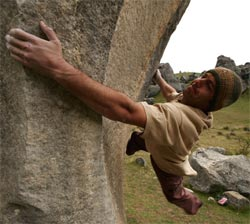
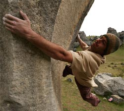
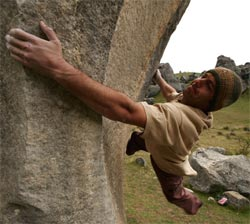

Gipsz Jakab vagyok.23 éves. 1992.ben születtem,Nyíregyházán.Jelenleg az ELTE IK-ra járok.

| Név | Életkor |
|---|---|
| Laci | 21 |
| Béla | 23 |
| Éva | 19 |
| Órarend | |||
|---|---|---|---|
| Idõpont | Hétfõ | Kedd | Szerda |
| 8:00-10:00 | Szünet | Számalap | |
| 10:00-12:00 | Web1 | Web3 | Web5 |
| 12:00-14:00 | Web2 | Web4 | web6 |